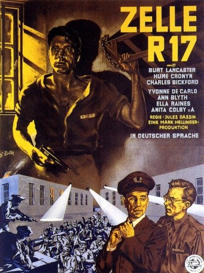
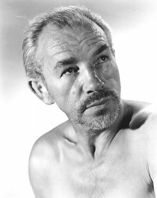

#10443 Zelle R 17
Alternativ: Brute Force (Englischer Titel)
 
 IMDB-Wertung: 7.7 / 10
IMDB-Wertung: 7.7 / 10  Metascore: 0
Metascore: 0 
An einem regnerischen Morgen schauen vier Zelleninsassen aus einem Fenster des Westmore-Gefängnisses und sehen, dass ihr Zellengenosse Joe Collins aus der Isolationshaft kommt. Joe ist wütend und spricht von Ausbruch. Während die Wärter, befehligt von dem sadistischen Oberaufseher Munsey, versuchen, die Disziplin aufrechtzuerhalten, warnt der Gefängnisarzt, die Haftanstalt sei ein Pulverfass, das explodieren würde, wenn man nicht vorsichtig sei.
Jahr: 1947
Dauer: 98 Minuten
FSK: 16
Land: USA Studio: Universal-InternationalTonspuren:
Untertitel: Deutsch,
Auflösung: 1080p (1440x1080) Größe: 6717 MB
Genre: Thriller, Drama, Krimi,
Regisseur: Jules Dassin
Drehbuch: Richard Brooks, Robert Patterson
Soundtrack: Miklós Rózsa
Darsteller:
 Burt Lancaster als Joe Collins
Burt Lancaster als Joe Collins Hume Cronyn als Captain Munsey
Hume Cronyn als Captain Munsey- Charles Bickford als Gallagher
 Yvonne De Carlo als Gina Ferrara
Yvonne De Carlo als Gina Ferrara- Ann Blyth als Ruth
- Ella Raines als Cora Lister
- Anita Colby als Flossie
- Sam Levene als Louie Miller
 Jeff Corey als 'Freshman' Stack
Jeff Corey als 'Freshman' Stack John Hoyt als Spencer
John Hoyt als Spencer- Jack Overman als Kid Coy
- Roman Bohnen als Warden A.J. Barnes
- Vince Barnett als Muggsy - Convict in Kitchen
 Jay C. Flippen als Hodges - Guard
Jay C. Flippen als Hodges - Guard- Richard Gaines als McCallum
- Frank Puglia als Signore Ferrara
- James Bell als Crenshaw - Convict in Print Shop
 Howard Duff als Robert 'Soldier' Becker
Howard Duff als Robert 'Soldier' Becker- Art Smith als Dr. Walters
 Whit Bissell als Tom Lister
Whit Bissell als Tom Lister Al Bain als Convict (uncredited)
Al Bain als Convict (uncredited) Bobby Barber als Jack (uncredited)
Bobby Barber als Jack (uncredited)- Phil Bloom als Convict (uncredited)
 Chet Brandenburg als Convict in Yard (uncredited)
Chet Brandenburg als Convict in Yard (uncredited) Paul Bryar als Harry (uncredited)
Paul Bryar als Harry (uncredited)- Edmund Cobb als Bradley - Tower Guard (uncredited)
 Gino Corrado als Italian Father Visiting Prison (uncredited)
Gino Corrado als Italian Father Visiting Prison (uncredited)-  James Dime als Convict (uncredited)
- Virginia Farmer als Sadie - Ruth's Nurse (uncredited)
 Chuck Hamilton als Guard (uncredited)
Chuck Hamilton als Guard (uncredited) John Harmon als Roberts (uncredited)
John Harmon als Roberts (uncredited) Al Hill als Convict in Chow Line (uncredited)
Al Hill als Convict in Chow Line (uncredited) Rex Lease als Hearse Driver (uncredited)
Rex Lease als Hearse Driver (uncredited)- Will Lee als Convict in Chow Line (uncredited)
 Kenneth MacDonald als Cell Check Guard (uncredited)
Kenneth MacDonald als Cell Check Guard (uncredited)- Frank Marlowe als Convict (uncredited)
 Mathew McCue als Convict (uncredited)
Mathew McCue als Convict (uncredited) Francis McDonald als Pat Regan (uncredited)
Francis McDonald als Pat Regan (uncredited) Charles McGraw als Andy - Convict in Auto Shop (uncredited)
Charles McGraw als Andy - Convict in Auto Shop (uncredited) Robert Milasch als Convict (uncredited)
Robert Milasch als Convict (uncredited)- Howard M. Mitchell als Guard (uncredited)
 William H. O'Brien als Convict (uncredited)
William H. O'Brien als Convict (uncredited) Frank O'Connor als Guard (uncredited)
Frank O'Connor als Guard (uncredited) Jack Perrin als Convict (uncredited)
Jack Perrin als Convict (uncredited) Jack Perry als Convict in Yard (uncredited)
Jack Perry als Convict in Yard (uncredited)- Gene Roth als Hoffman (uncredited)
 John Roy als Guard (uncredited)
John Roy als Guard (uncredited) Carl Sklover als Convict (uncredited)
Carl Sklover als Convict (uncredited)- Tom Steele als Tom - Tower Guard (uncredited)
 Glenn Strange als Tompkins (uncredited)
Glenn Strange als Tompkins (uncredited)
Datei: X:\1900-1949\Zelle R 17 (1947, FSK16, 1440x1080).mkv seit 07.01.2019
Festplatte: Gemischt-01+Anime
 Es gibt insgesamt 80 Filme in der Gruppe '1900-1949'
Es gibt insgesamt 80 Filme in der Gruppe '1900-1949'